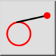

Teğet (Nokta, Daire)
Araç Çubuğu / Simge:


Menü: Çiz > Çizgi > Teğet (Nokta, Daire)
Kısayol: L, T, 1
Komutlar: linetangent | tangent | lt1
Açıklama
Bu araçla bir koordinattan mevcut bir yay, daire veya elips varlığına teğetler oluşturun.
Kullanım
- Seçenekler araç çubuğunda istediğiniz çizgi türünü seçin.
- Çizginin başlangıç noktasının konumunu belirtmek için fareyi kullanın veya komut satırına bir koordinat girin.
- Teğet oluşturmak istediğiniz varlığa tıklayın. Genellikle iki teğet mümkündür. Fareyi hareket ettirdiğinizde, oluşturulacak teğetin bir önizlemesini görebilirsiniz.